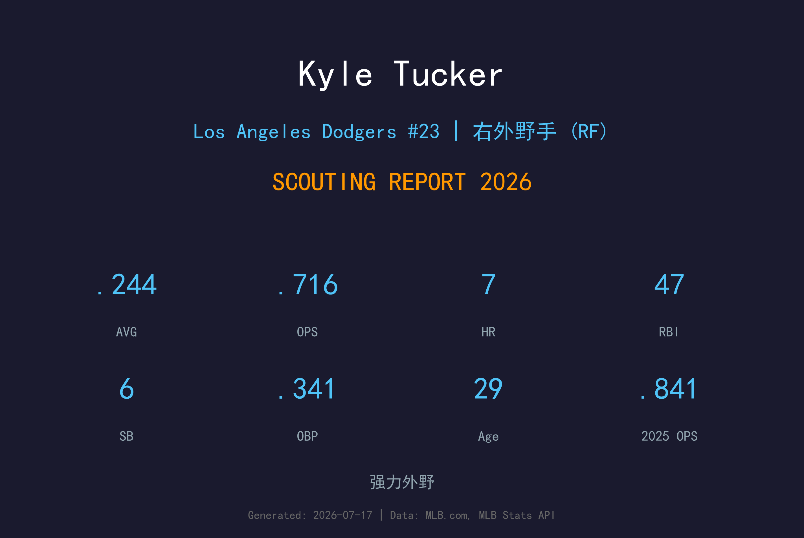
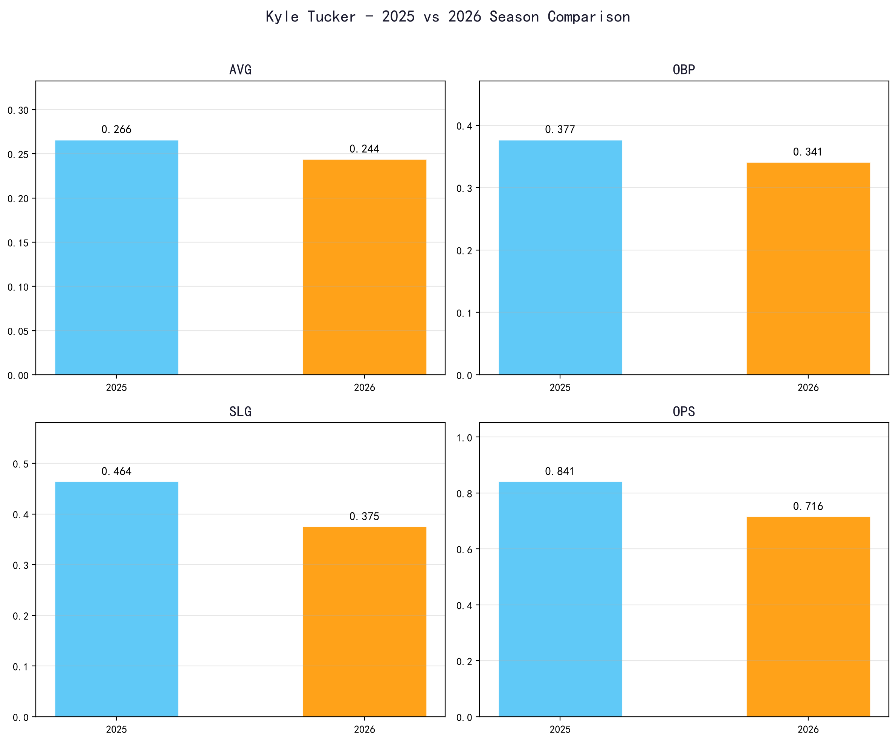
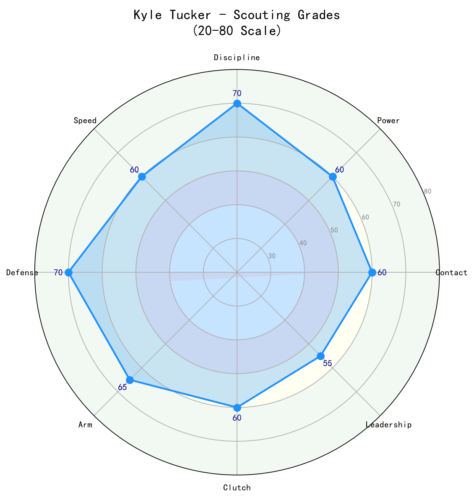

Los Angeles Dodgers #23 | 右外野手 | 左打 | 强力外野

Kyle Tucker 是当今大联盟最具天赋的右外野手之一，以卓越的力量-速度组合、顶级选球能力和金手套级别的防守著称。
他在2025年于小熊队打出.266/.377/.464、22轰、25盗的精英赛季，证明自己是联盟前五的右外野手。2026年加盟道奇后，虽然长打数据有所下滑，但.341的上垒率仍显示其出色的plate discipline。
Tucker 的挥棒平顺、防守范围大、臂力优秀，是道奇外野防线的核心人物。下半季有望找回长打节奏，成为球队季后赛的关键武器。
生涯早期即随太空人夺冠，积累丰富季后赛经验。
攻守俱佳的赛季，确立联盟顶级右外野手地位。
.266 AVG | .377 OBP | .464 SLG | 22 HR | 73 RBI | 25 SB
精英级别的全能表现，自由市场最炙手可热的强打好手。

| 赛季 | G | AVG | OBP | SLG | OPS | HR | RBI | BB | SO |
|---|---|---|---|---|---|---|---|---|---|
| 2025 | 136 | .266 | .377 | .464 | .841 | 22 | 73 | 87 | 88 |
| 2026 | 91 | .244 | .341 | .375 | .716 | 7 | 47 | 48 | 76 |
Tucker 的挥棒路径长而流畅，出手点低，能够产生强劲的拉打力量。他的左打挥棒很适合道奇体育场的右外野短墙，但2026年 his 击球仰角 似乎偏低，导致长打率从.464降至.375。
选球是 Tucker 最核心的竞争力。2026年保送率仍维持12.6%，上垒率.341，高于联盟平均。他不会被坏球诱惑，经常能迫使投手进入有利count。
Tucker 的右外野防守达到金手套级别。6'3"的身材加上出色的第一步反应，使他能覆盖大量范围。臂力准确且有力，能够有效阻止跑者推进。
2026年的打击数据下滑主要源于力量输出不足（7轰 vs 2025年22轰）。打击率.244也低于生涯平均，可能与新环境、新球探报告以及略微增加的上旋球有关。下半季若提升击球仰角，仍有20+轰潜力。

攻守兼备的右外野手，只要找回长打节奏，仍是联盟顶级外野
A- 级 / 全明星外野
Kyle Tucker 仍处于29岁的黄金年龄，2026年的数据下滑更像是环境适应期而非能力衰退。他的核心技能（选球、防守、速度）都保持在高水准，下半季最可能看到长打复苏。
2026（下半季）：OPS有望回升至.800+，全季约20轰、15盗
2027-2028：进入生涯巅峰，维持.270/.360/.480，25轰+20盗
2029+：随着年龄增长速度下降，但凭借选球和防守仍具高价值
Kyle Tucker 出生于佛罗里达州坦帕，棒球基因深厚：他的父亲 Fred Tucker 和哥哥 Preston Tucker 都曾在职业棒球体系打拼。Kyle 在高中时期就是全美瞩目的强打少年，2015年MLB选秀中，他在首轮第5顺位被休斯顿太空人选中。
在太空人农场系统，Tucker 迅速展现出顶级天赋，2018年登上大联盟。他在2022年帮助球队夺得世界大赛冠军，并在2023年入选全明星。2025年，他在芝加哥小熊队打出职业生涯最完整的一个赛季，成为自由市场最大牌的强打外野手之一。
2026年，Tucker 加盟洛杉矶道奇队，与外野搭档 Andy Pages、Teoscar Hernández 组成强力外野防线。他的防守和选球使他成为道奇打线中不可或缺的一员。
场外，Tucker 以低调和职业态度著称。他喜欢钓鱼和高尔夫，是球队更衣室中稳定的存在。